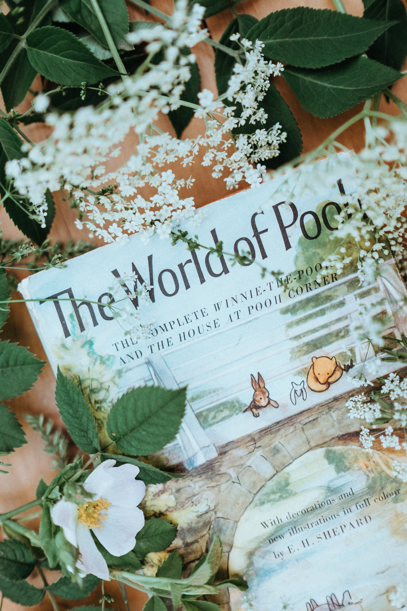

Winnie-the-Pooh, also called Pooh Bear and Pooh, is a fictional anthropomorphic teddy bear created by English author A. A. Milne and English illustrator E. H. Shepard.
The first collection of stories about the character was the book Winnie-the-Pooh (1926), and this was followed by The House at Pooh Corner (1928). Milne also included a poem about the bear in the children's verse book When We Were Very Young (1924) and many more in Now We Are Six (1927). All four volumes were illustrated by E. H. Shepard.